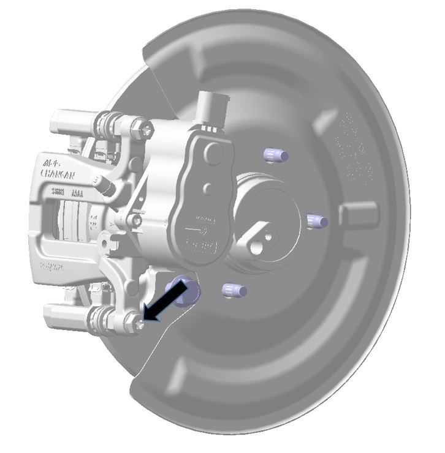
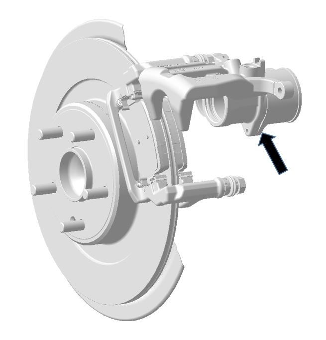
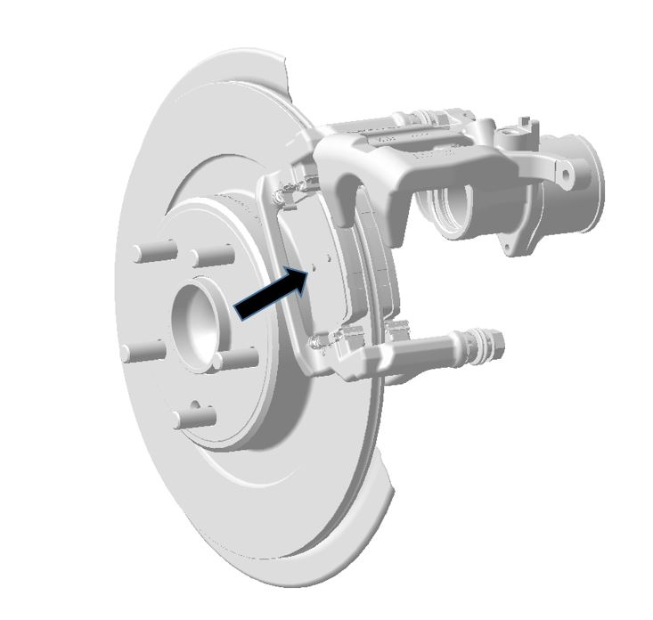

Снятие
1. Снять задний суппорт. Ссылка: Задний тормозной суппорт
Снятие тормозного шланга пропустить.
2. Открутить болт крепления верхнего осевого пальца суппорта. Крутящий момент: 31 - 38 N.m.

3. Повернуть корпус суппорта вокруг оси.

4. Снять фрикционные накладки тормоза.

Установка
Порядок Установка обратен порядку Снятие.
1. При замене фрикционных накладок их необходимо заменять парами (то есть внутреннюю и внешнюю накладки одновременно)
2. После замены с силой нажать на педаль тормоза более двух раз, проверить уровень тормозной жидкости, при необходимости долить